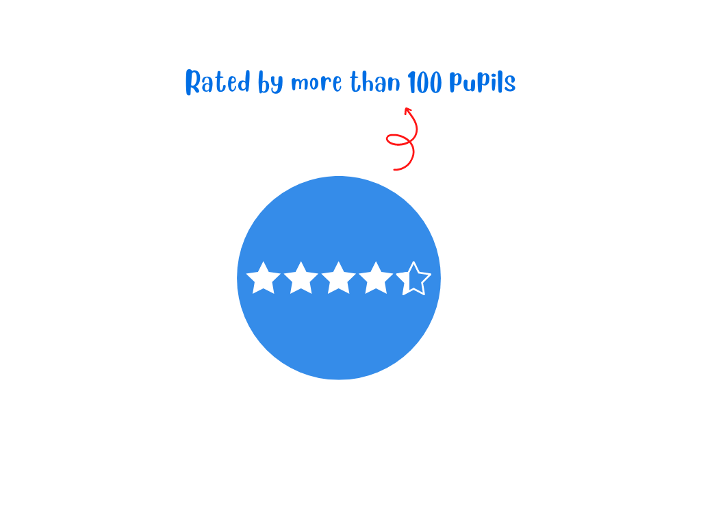
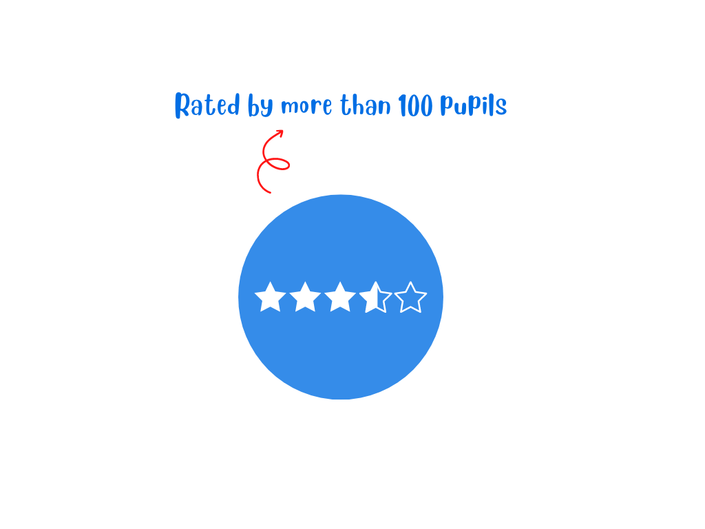
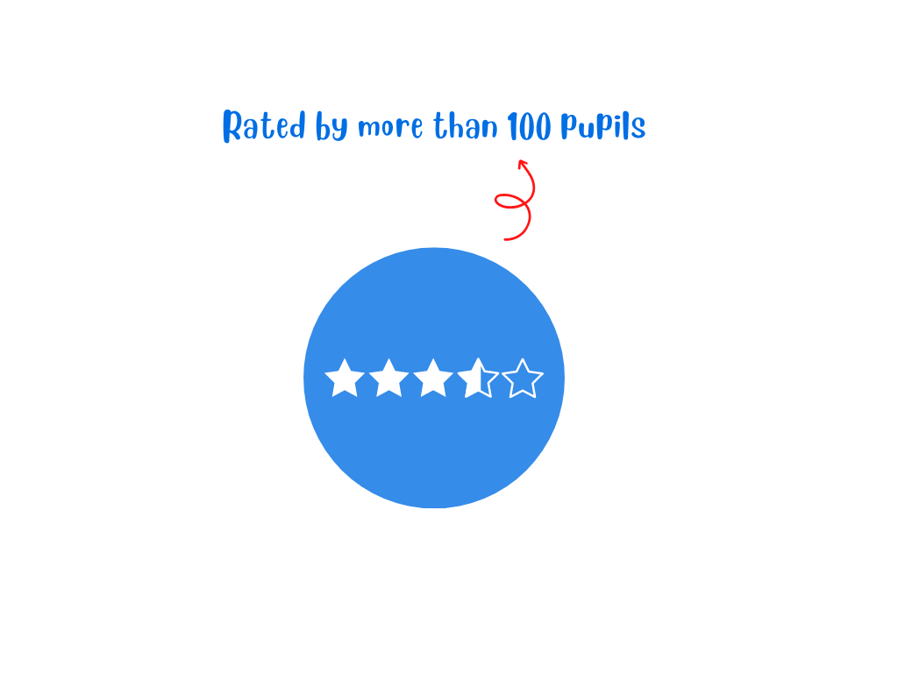
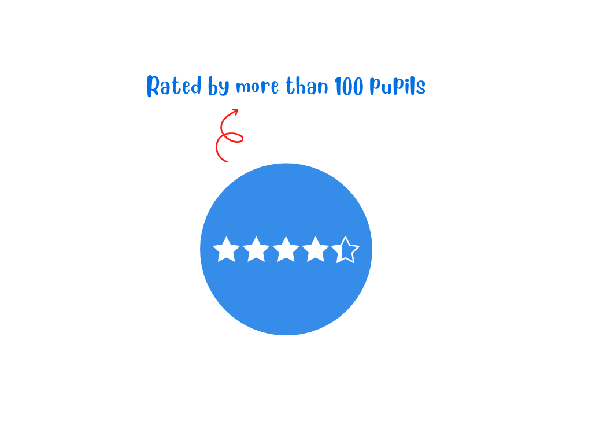

Your future, your STEM!


Discover our Workshops
Artificial Intelligence in operations research
Workshop leader Dr Neil UrquhartEach day Computer Science solves many problems that improve our lives and supports society. One of the most challenging areas is that of deliveries, ensuring that goods and services are delivered quickly and efficiently. This workshop introduces you to one of the fundamental problems in computer science, the Travelling Salesperson Problem. Although simple to understand, the problem is deceptively complex to solve. Using a problem based on the center of Edinburgh, we begin by trying to solve our problem manually. We then investigate how a simple rule called a Heuristic can help us solve the problem. Finally we use a simple Artificial Intelligence algorithm to help us find a solution quickly. Even if you've never written any programme code before you will find this an interesting introduction to computer science. We'll be using the Python language and data from Open Street map so you'll be working with tools used by Computer Science students and professionals.

Information and feedback systems for decision making
Workshop leader Dr Wegene DemekeWe made decisions all the time. Information is a key to make informed decisions. This workshop will introduce you to how previous decisions affect future outcomes, sometimes with delayed responses. We will introduce you to the role and impact of feedback. You will participate in building simple models and see the results of your decisions on various aspects of social and business entities, such as population growth, business profits, and growth of customer numbers. The model will enable you to explore likely future outputs based on current decisions.
Exploring the future energy landscape
Workshop leader Dr Jubaer AhmedWe are running out of energy sources. Our conventional supplies of energy from Natural Gas, Oil and Coal are depleting and we need to stop using these anyway to save the world from global warming. What are we going to do without the supply of energy? Is this the end of the growth of modern civilization? Let’s have a look into the future energy landscape where renewable energy sources like Solar, Wind, Hydro, Nuclear, geothermal and Hydrogen cells will govern the energy supply. They are known to be green energy. Are they? Let’s explore it together.

Reinforcement Learning based Intelligent learning for training robots
Workshop leader Dr Shufan YangReinforcement learning (RL), as a research paradigm, concerns not only trial-and-error learning without a model of the environment, but also deliberative planning with a model that can present the dynamics of the environment. Often robots can be re-trained with changes made to their environment using a reinforcement learning method. In this workshop, we are going to explore reinforcement learning based training algorithm to allow a robot to walk again after losing one of its legs. Four training strategies will be provided for students to explore. The simulation environment is based on Unity game platform and those algorithms performance will be evaluated by students who observe those actions and compared with researcher developed evaluation metrics. This allows students to have first-hand experience of state-of-art reinforcement learning algorithms.
